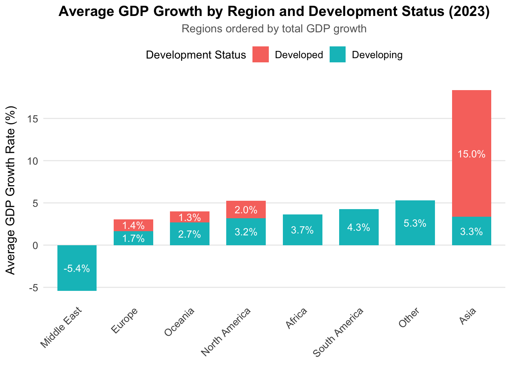
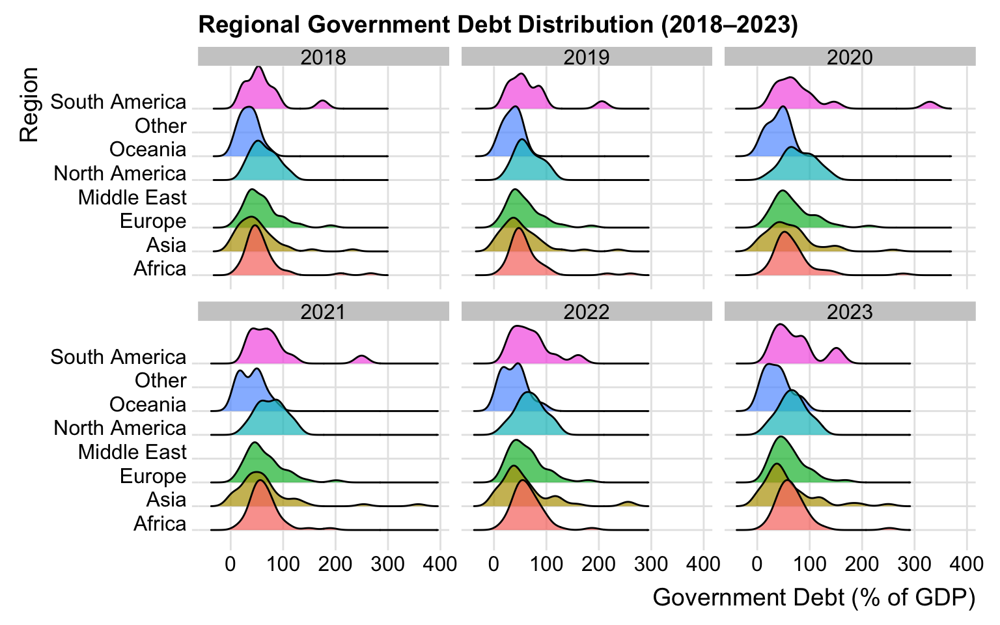
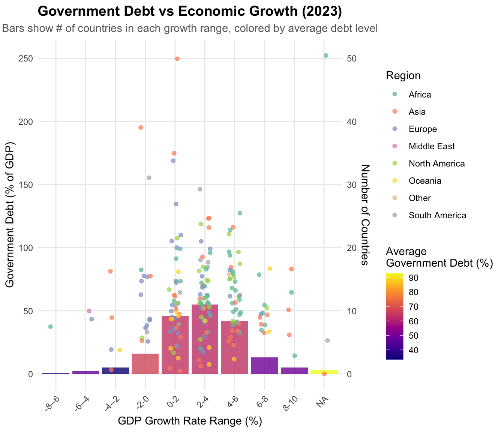

3.1 Graph 1: Average GDP Growth by Region and Development Status (2023)
Code
# Calculate average GDP growthaverage_gdp_growth <- data |>mutate(GDP_Growth_2023 =as.numeric(ifelse(GDP_Growth_2023 =="no data", NA, GDP_Growth_2023))) |>group_by(Region, Status) |>summarize(Average_GDP_Growth =mean(GDP_Growth_2023, na.rm =TRUE),.groups ="drop")ggplot(average_gdp_growth, aes(x =reorder(Region, Average_GDP_Growth), y = Average_GDP_Growth, fill = Status)) +geom_bar(stat ="identity", position ="stack",width =0.7) +geom_text(aes(label =sprintf("%.1f%%", Average_GDP_Growth)),position =position_stack(vjust =0.5),color ="white",size =3.5) +labs(title ="Average GDP Growth by Region and Development Status (2023)",subtitle ="Regions ordered by total GDP growth",x =NULL,y ="Average GDP Growth Rate (%)",fill ="Development Status") +theme_minimal() +theme(plot.title =element_text(size =14, face ="bold", hjust =0.5),plot.subtitle =element_text(size =11, color ="gray40", hjust =0.5),axis.title.y =element_text(size =12, margin =margin(r =10)),axis.text.x =element_text(angle =45, hjust =1, size =10),axis.text.y =element_text(size =10),legend.position ="top",legend.title =element_text(size =11),legend.text =element_text(size =10),panel.grid.major.x =element_blank(),panel.grid.minor =element_blank())

This chart illustrates the average GDP growth rates across different regions in 2023, breaking the data down by development status. Asia leads the pack with the highest overall growth at 18.3%, driven largely by developed economies at 15.0%, while developing economies contributed 3.3%. In contrast, the Middle East experienced negative growth at -5.4%, entirely from its developing economies.
Europe showed modest growth at 3.1%, with developed economies contributing 1.4% and developing economies slightly higher at 1.7%. Oceania performed slightly better, with a total growth of 4%, split between 1.3% from developed economies and 2.7% from developing economies. North America recorded 5.2% growth overall, with 2.0% coming from developed economies and 3.2% from developing ones.
Africa and South America, made up entirely of developing economies, reported steady growth rates of 3.7% and 4.3%, respectively. Meanwhile, the “Other” category also performed well, growing by 5.3%, solely from developing economies. The data highlights some interesting patterns. While many regions rely heavily on either developed or developing economies, others like Asia show a mix, with its strong overall growth largely driven by its developed economies. This is notable, as developing economies are typically the ones with higher growth rates.
3.2 Graph 2: GDP Growth Trends by Region and Development Status (2018-2023)
Code
# Transform data into long formatgdp_long <- data |>pivot_longer(cols =starts_with("GDP_Growth"),names_to ="Year",values_to ="GDP_Growth") |>mutate(Year =as.numeric(gsub("GDP_Growth_", "", Year)),GDP_Growth =as.numeric(ifelse(GDP_Growth =="no data", NA, GDP_Growth))) |>filter(!is.na(GDP_Growth)) # Plot GDP growth over timeggplot(gdp_long, aes(x = Year, y = GDP_Growth, color = Status, group =interaction(Status, Region))) +geom_line(size =0.8) +geom_point(size =1.5) +facet_wrap(~ Region, scales ="free", ncol =3) +labs(title ="GDP Growth Trends by Region and Development Status (2018-2023)",subtitle ="GDP growth trends over time for developed and developing nations",x ="Year",y ="GDP Growth Rate (%)",color ="Development Status") +scale_color_manual(values =c("Developed"="#1f77b4", "Developing"="#ff7f0e")) +theme_minimal() +theme(plot.title =element_text(size =14, face ="bold", hjust =0.5),plot.subtitle =element_text(size =11, color ="gray40", hjust =0.5),axis.title =element_text(size =12),axis.text.x =element_text(size =10),axis.text.y =element_text(size =10),legend.position ="top",legend.title =element_text(size =11),legend.text =element_text(size =10),panel.grid.minor =element_blank(),strip.text =element_text(size =11, face ="bold"))
In 2023, Asia stood out as the global growth leader, achieving an impressive 18.3% total GDP growth rate, while the Middle East struggled with a notable decline, reporting -5.4% growth. This stark contrast between regions led us to a deeper dive into the historical trends through time series analysis.
The time series analysis revealed the severe economic impact of COVID-19 in 2020, which caused significant contractions across most regions. Europe, the Middle East, and the “Other” category were among the hardest hit during this period. However, recovery patterns differed widely. Asia showcased exceptional resilience, with both its developed and developing economies maintaining stable growth through the post-pandemic years. Europe, while rebounding strongly in 2021, saw its growth stabilize at a lower rate in subsequent years. North America displayed a slower, steadier recovery, with both developed and developing economies following a gradual upward trajectory.
The analysis also highlighted clear differences between developed and developing economies. Developed economies (depicted by blue lines) generally experienced lower but more stable growth rates. In contrast, developing economies (shown in orange lines) were characterized by higher volatility but also greater growth potential. This distinction was particularly pronounced in South America’s performance, where developing economies demonstrated notable growth following the pandemic.
3.3 Graph 3: Regional Government_Debt Distribution (2018–2023)
Code
library(ggridges)data |>select(starts_with("Government_Debt"), Region) |>pivot_longer(-Region, names_to ="Year", values_to ="Government_Debt") |>mutate(Year =gsub("Government_Debt_", "", Year)) |>ggplot(aes(x =as.numeric(Government_Debt), y = Region, fill = Region)) +geom_density_ridges(alpha =0.7, scale =1.5) +facet_wrap(~Year) +labs(title ="Regional Government Debt Distribution (2018–2023)",x ="Government Debt (% of GDP)", y ="Region") +# Updated labeltheme_ridges() +theme(legend.position ="none")

Building on our earlier analysis of GDP growth trends, we now turn to examining government debt patterns from 2018 to 2023. The ridge density plots provide valuable insights into how debt distributions have evolved across regions over time.
Europe consistently exhibits the widest spread in government debt levels, with a distinct bimodal distribution suggesting two clusters of countries with differing debt strategies. This pattern remains largely stable throughout the period, although a marked increase in overall debt levels is evident post-2020, likely due to pandemic-related fiscal measures. South America shows high variability in government debt levels, with a wide and increasingly dispersed distribution after 2020. The long right tails indicate a few countries with exceptionally high debt levels, reflecting significant outliers in the region’s fiscal landscape.
Asia displays a more concentrated debt distribution, with most countries falling within a moderate debt range. However, some outliers with very high debt levels are evident, as highlighted by the right tails in the distributions, signaling unique cases of heavy borrowing. Africa demonstrates relatively lower average debt levels compared to other regions, with a fairly consistent distribution throughout the period. After 2020, however, the distribution begins to widen slightly, suggesting growing diversity in debt levels across African nations.
The Middle East has one of the most compact debt distributions, with little year-to-year variability. This consistency indicates that the government has tighter control over its debt than other regions. A notable trend across all regions is a clear shift in debt distributions around 2020, which corresponds to the global economic impact of the COVID-19 pandemic. Most regions experienced an increase in debt levels and distributions following this period, reflecting widespread increases in government borrowing to address the crisis. We can describe the various approaches and challenges that regions face when managing government debt in the aftermath of global economic disruptions.
3.4 Graph 4: Log-Scaled GDP Growth vs. Per Capita Income Across Regions (2022 vs 2023)
This shows regional variations in GDP growth against per capita income in 2023. Though their GDP per capita is usually low, African nations show great variation in growth rates, which reflect different phases of development. Typical of advanced economies, European nations are concentrated at higher income levels with steady, modest growth. Asia exhibits the most varied trends; large-population countries are showing strong development all over a wide income range. While South America groups more consistently in the middle for both measures, North America sits in the higher income range with consistent increase. With some high-income countries and differing rates of development, Oceania and the Middle East show erratic trends. While smaller countries are distributed over all income levels, larger bubbles reflect populous countries like those in Asia, which mix great growth and mid-to-high income.
There are some intriguing changes when comparing the performance of nations in 2022 and 2023.
In 2022, things were fairly predictable: European countries were comfortably at the top, with high living standards (high GDP per capita), but not growing at a rapid pace. African countries experienced varying degrees of growth while maintaining lower overall living standards. Pretty much what you would expect.There are some interesting changes when we move to 2023. Growth rates have become more widely distributed overall, with some nations seeing much slower growth and others seeing much higher growth rates (up to almost 100% on the log scale). Although their growth rates varied more than in 2022, African nations continued to fall into the lower GDP per capita range.
Over the course of both years, Asian nations (in blue), especially those with larger populations (shown by larger circles), remained largely stable, with some exhibiting better growth rates in 2023. The GDP per capita of European nations remained high in 2023, albeit at somewhat more cautious growth rates than in 2022. The comparison of these years indicates that, although basic regional GDP per capita trends stayed mostly stable, 2023 saw greater economic volatility and greater differences in growth rates. The continuous global economic recovery and disparate regional reactions to post-pandemic issues are probably to blame for this.
3.5 Graph 5: Relationship Between Government Debt and Economic Growth (2023)
Code
debt_growth_data <- data |>mutate(GDP_Growth_2023 =as.numeric(ifelse(GDP_Growth_2023 =="no data", NA, GDP_Growth_2023)),Government_Debt_2023 =as.numeric(ifelse(Government_Debt_2023 =="no data", NA, Government_Debt_2023)) ) |> (\(df) df[!is.na(df$GDP_Growth_2023) &!is.na(df$Government_Debt_2023), ])()avg_metrics <- debt_growth_data |>mutate(Growth_Bin =cut(GDP_Growth_2023, breaks =seq(-10, 20, by =2),labels =paste(seq(-10, 18, by =2), seq(-8, 20, by =2), sep ="-"))) |>group_by(Growth_Bin) |>summarise(Avg_Debt =mean(Government_Debt_2023, na.rm =TRUE),Count =n())ggplot() +geom_col(data = avg_metrics,aes(x = Growth_Bin, y = Count, fill = Avg_Debt),alpha =0.8) +geom_point(data = debt_growth_data,aes(x =cut(GDP_Growth_2023, breaks =seq(-10, 20, by =2),labels =paste(seq(-10, 18, by =2), seq(-8, 20, by =2), sep ="-")),y = Government_Debt_2023,color = Region),position =position_jitter(width =0.2),alpha =0.7) +scale_fill_viridis(name ="Average\nGovernment Debt (%)",option ="plasma") +scale_y_continuous(name ="Government Debt (% of GDP)",sec.axis =sec_axis(~./5, name ="Number of Countries")) +scale_color_brewer(palette ="Set2") +labs(title ="Relationship Between Government Debt and Economic Growth (2023)",subtitle ="Bars show number of countries in each growth range, colored by average debt level",x ="GDP Growth Rate Range (%)",color ="Region") +theme_minimal() +theme(plot.title =element_text(size =14, face ="bold", hjust =0.5),plot.subtitle =element_text(size =11, color ="gray40", hjust =0.5),axis.text.x =element_text(angle =45, hjust =1),legend.position ="right",panel.grid.minor =element_blank())

This visualization explores the relationship between government debt and economic growth across regions in 2023, revealing nuanced patterns. Most countries cluster within the 0-4% growth range, particularly 2-4%, with average debt levels around 60-70% of GDP (indicated by pink/purple bars). High debt levels (over 150% of GDP) appear across various growth ranges, showing that high debt does not always equate to low growth; for example, some Asian countries sustain strong growth with substantial debt, while certain European nations maintain stable growth despite high debt levels. Lower-growth regions (-2-0%) tend to have slightly higher average debt, but this trend is not uniform—African nations often achieve higher growth with lower debt, whereas European countries display moderate growth alongside higher debt burdens. Outliers in extreme growth ranges (below -6% or above 8%) often reflect unique economic conditions rather than typical debt-growth relationships. While there is a mild negative association between debt and growth, the relationship is complex and shaped by regional context and economic structure, challenging the assumption that high debt universally inhibits growth.
3.6 Graph 6: Government Debt Trends by Region (2018–2023)
Code
data |>select(starts_with("Government_Debt"), Region) |>pivot_longer(-Region, names_to ="Year", values_to ="Government_Debt") |>mutate(Year =as.numeric(gsub("Government_Debt_", "", Year))) |>group_by(Year, Region) |>summarise(Average_Debt =mean(as.numeric(Government_Debt), na.rm =TRUE)) |>ggplot(aes(x = Year, y = Average_Debt, color = Region)) +geom_line(size =1.2) +geom_point() +geom_text(aes(label =ifelse(Average_Debt >70, paste0(round(Average_Debt, 1), "%"), "")),hjust =0.5, vjust =-0.5) +scale_y_continuous(labels = scales::percent_format(scale =1)) +# Format y-axis as percentagelabs(title ="Government Debt Trends by Region (2018–2023)",x ="Year", y ="Average Debt (% of GDP)") +theme_minimal() +theme(plot.title =element_text(size =14, face ="bold", hjust =0.5),axis.title =element_text(size =12),legend.position ="right",legend.title =element_text(size =11),legend.text =element_text(size =10))
After analyzing trends in GDP growth, let’s look at how government debt changed geographically between 2018 and 2023. This tells an intriguing tale, particularly in relation to the COVID-19 era.
The most dramatic increase occurs in 2020, when the “Other” region reaches a high of 112.3 percent of GDP. South America followed a similar pattern, increasing to 92.2%, while North America reached approximately 80%. This surge in debt levels demonstrates how governments around the world responded to the pandemic with massive spending. The recovery pattern since then has been particularly interesting. Most regions show a gradual reduction in debt levels after 2020, indicating efforts to regain financial control. The “Other” region, for example, has seen its debt fall significantly from its peak of 112.3% to 78.7% by 2023.
Throughout this time, the debt levels of Europe and Asia have remained comparatively constant, averaging 60%. At roughly 50% of GDP, the Middle East has the lowest and most stable debt profile of any region. The most conservative approach to debt management among all regions is demonstrated by Oceania, which stands out for maintaining remarkably stable debt levels even during the 2020 crisis.
Some of the patterns of GDP growth that we have seen are put into perspective by these trends. South America and other regions that took on more debt during the pandemic appear to be having more difficulty maintaining growth. Asia and Europe, on the other hand, are exhibiting more consistent economic performance due to their more stable debt levels.